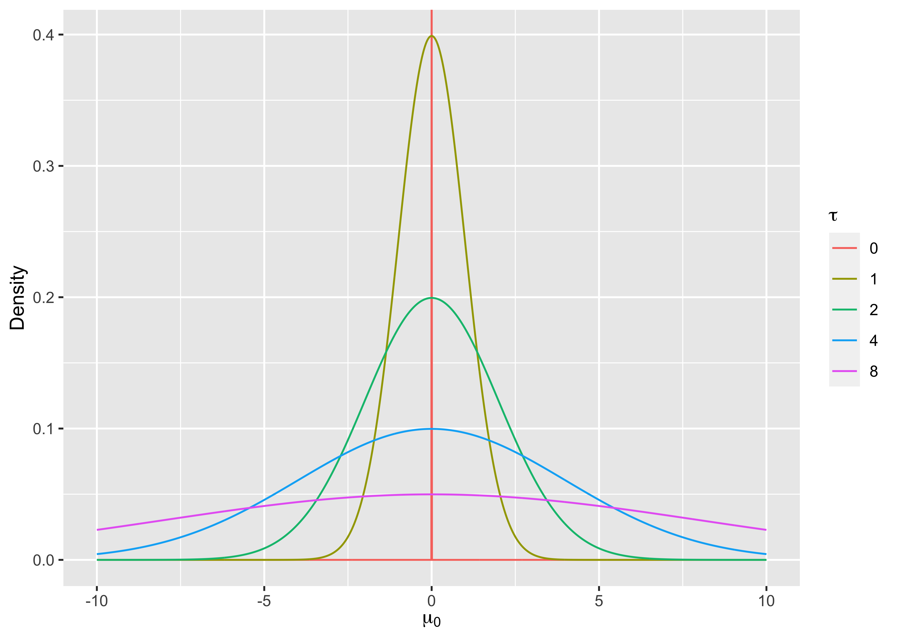
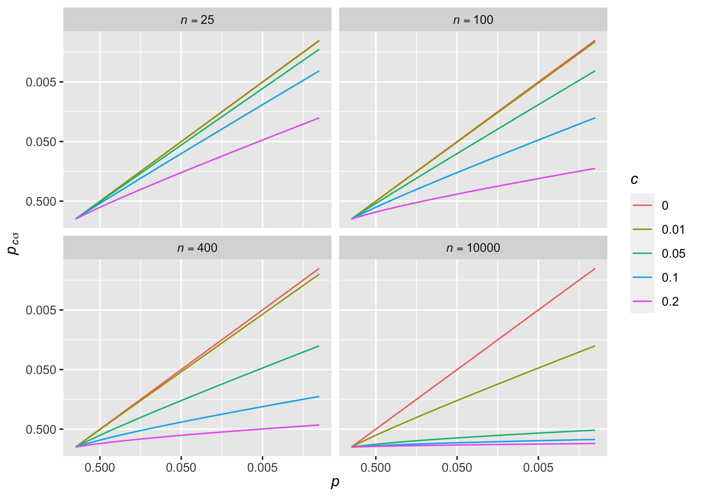
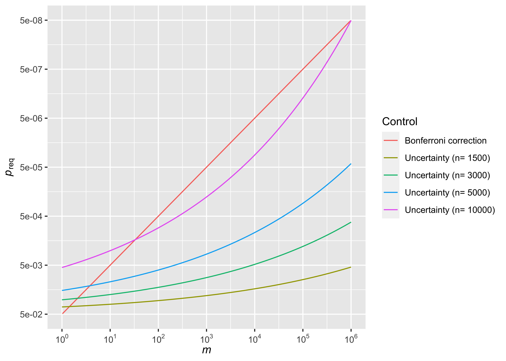

본 연구는 김진섭 대표가 계획했던 연구로, 결과적으로 학술지 게재에 실패했다는 것을 미리 알려드립니다.
Abstract
통계적 가설검정에서 광범위하게 이용되는 \(p\)-value는 샘플 숫자만 늘리면, 아무리 작은 차이라도 유의미한 결과로 해석되는 문제가 있다. 이것은 대부분의 연구에서 차이 또는 효과가 정확히 0이라는 비현실적인 귀무가설을 사용하기 때문에 발생하는 문제이며, 실제 차이가 0.0000001이라도 정확히 0만 아니라면 샘플 수만 늘려도 결국 \(p <0.05\)인 유의한 결과를 얻을 수 있다. 그러나 실제 차이가 정확히 0이라고 생각하는 사람은 아무도 없으며, 아무도 주장하지 않는 것을 반박해 봐야 유용한 결론을 얻지 못한다. 이에 본 연구에서는 귀무가설에 uncertainty 개념을 추가하여 가설검정방법을 재정의하였고, 이 방법에 따른 새로운 \(p\)-value가 기존의 \(p\)-value와 effect size를 종합한 지표로서 지나치게 작은 차이를 유의한 결과로 해석하는 문제를 해결할 수 있음을 보였다. 한편 다중비교에서 검정할 가설의 갯수가 증가하는 것을 각 가설의 uncertainty가 증가하는 것으로 재해석할 수 있었고, 이 접근법이 기존의 family-wise error rate(FWER), false discovery rate(FDR) control이 지나치게 큰 sample size를 필요로 하는 단점을 보완할 수 있었다. 이 새로운 가설검정방법이 기존 가설검정의 단점을 극복한 새로운 표준이 될 것으로 기대한다.
Introduction
통계적 가설검정은 물리학, 생물학, 의학 등의 자연과학뿐만 아니라 경제학, 심리학 등의 사회과학에서도 어떤 주장을 하기위한 필수적인 도구로 이용되며 핵심 개념은 가설검정(hypothesis test)이다(Anderson, Burnham, and Thompson 2000). R.A Fisher에 의해 처음으로 사용된 귀무가설(null hypothesis)은 반박하려는 가설로 이용되며, 이 가설 하에서 일어날 확률이 낮은 사건을 제시함으로서 이것이 틀렸음을 설명하는데, 이는 수학의 증명법 중 하나인 귀류법과 비슷하다(Yates 1964). 여기서 일어날 확률이 낮은 사건을 정량적으로 표현하는 것이 \(p\)-value이며 흔히 기준이 되는 \(p <0.05\)는 연구의 결과보다 더 극단적인 사건이 발생할 확률이 5%미만임을 의미한다(Wasserstein and Lazar 2016).
\(p <0.05\)는 지금까지 과학 연구에서 새로운 발견의 절대적인 기준으로 이용되었는데, 이에 대한 비판도 꾸준히 제시되어 왔으며 최근에는 유의성의 기준을 0.05에서 0.005로 바꿔야한다는 주장까지 나왔다(JA 2018; Anderson, Burnham, and Thompson 2000; Benjamin et al. 2018; Wasserstein and Lazar 2016). 그러나 \(p\)-value의 개념은 그대로 두고 유의수준만 낮추는 것은 지금부터 언급할 가설검정법의 근본적인 문제를 해결하지 못한 임시방편에 불과하다.
본 연구자들은 비현실적인 귀무가설을 가설검정법의 근본적인 문제로 판단한다. 철학자 쇼펜하우어는 논쟁에서 이기는 38가지 비법이라는 책에서 상대방의 주장을 단순화하라고 주장했는데, 가설검정에서도 귀무가설은 명확하게 제시하는 것이 원칙이며(예: \(\mu =0\)), 가설이 명확해야 그것을 반박하기도 쉽다(Goffey 2005). 그러나 명확한 귀무가설은 현실에서는 존재하지 않는다. 예를 들어 어떤 값이 정확히 0이라고 주장하는 사람이 있을까? 대부분은 어느 정도 uncertainty를 마음속에 갖고 있으며 실제 측정값이 0.0000001이기 때문에 값이 0이라는 가설은 틀렸다고 주장한다면 설득력을 얻기 어렵다. 그러나 현재의 가설검정방법은 uncertainty가 전혀 없는 명확한 귀무가설을 사용하기 때문에 실제 측정값과 가정의 차이가 아무리 작아도 샘플수만 커지면 결국은 \(p < 0.05\)인 결과를 얻을 수 있고, 이는 유의수준을 아무리 올려도 마찬가지이다. 예를 들어 Two-sided \(z\)-test의 검정통계량은 \(z=\frac{\bar{X}-\mu}{\sigma/\sqrt{n}}\) 꼴인데 \(\bar{X}-\mu\)가 0만 아니라면 \(n\)을 늘려서 \(p\)값을 무한히 0에 가깝게 만들 수 있다. 이에 \(p\)-value와 별개로 실제 차이값도 살펴봐야 한다는 주장이 제기되었는데, 이 차이를 표준화한 개념이 effect size로 원래도 required sample size를 계산할 때 이용하는 지표이며, 흔히 차이를 표준편차로 나눈 값을 사용한다(Sullivan and Feinn 2012). 이처럼 현실적인 귀무가설을 설정하는 것은 그 자체로 중요한 것 뿐만 아니라 effect size를 고려하는 것과도 연결되어 있지만 이것을 개념화한 이론이 없어 실제 연구설계에 반영되기 어렵다.
이에 저자는 uncertainty를 포함한 귀무가설과 이것을 이용한 가설검정방법을 제안할 것이며 이를 통해 계산된 새로운 \(p\)-value가 기존 \(p\)-value와 effect size를 종합적으로 고려할 수 있는 지표임을 보일 것이다. 현실적인 귀무가설을 설정하는 것이 effect size를 고려하는 것과 직접적으로 연결되어 있음을 보임으로서 가설검정 시 effect size를 고려해야 하는 이유에 대한 이론적 배경을 탄탄히 할 수 있으며, 새로운 \(p\)를 기준으로 유의수준을 설정하면 샘플수의 힘만으로 작은 차이를 유의한 결과로 해석하는 것을 방지할 수 있다. 간단한 Two-sided \(z\)-test를 예로 들어 개념을 정리 한 후 다른 test로 확장할 것이며, 마지막으로 이 개념을 다중비교에 활용하여 새로운 다중비교법을 제안하고 FWER, FDR control방법과 비교해 보겠다.
Basic Concept
Brief Review of Hypothesis Test
평균은 모르고 분산이 \(\sigma^2\)인 모집단에서 \(n\)개의 샘플 \(X_1, X_2, \cdots, X_n\)을 뽑아 모평균이 \(\mu_0\)인지 가설검정을 한다고 하자. 기존에는 귀무가설 \(H_0\)를 \(\mu = \mu_0\)로 설정한 후, 이 가정 하에서 \(\bar{X}\sim N(\mu_0, \frac{\sigma^2}{n})\)임을 이용해서(\(n\)이 적당히 클 때 중심극한정리) \((\bar{X}-\mu_0)\sim N(0,\frac{\sigma^2}{n})\)을 얻을 수 있으며 검정통계량은 아래와 같이 표현된다.
\[ z= \dfrac{\bar{X}-\mu_0}{\sigma/\sqrt{n}} \sim N(0,1)\]
Two-sided test라면 \(z\)값이 1.96보다 크거나 -1.96보다 작을 때 \(p <0.05\)로 유의한 결과로 판단한다. 한편, \(\bar{X}-\mu_0\)이 딱 0만 아니라면 \(n\)이 무한히 커질 때 \(z\)도 무한히 커져 어떠한 \(p\)-value 기준으로도 유의한 결과가 되는 문제가 있다.
Null hypothesis with uncertainty
위의 귀무가설에 uncertainty 개념을 추가해 보자. \(H_0: \mu \sim N(\mu_0,\tau^2)\)는 모평균이 \(\mu_0\)이라고 생각하지만 \(\tau\)정도의 uncertainty를 갖고 있다는 뜻으로 \(\tau=0\)이면 기존의 귀무가설과 일치한다(Figure @ref(fig:fig1)).
앞에서는 \(\bar{X}-\mu_0\)의 분산이 \(\frac{\sigma^2}{n}\)이었지만 이번에는 모평균 \(\mu_0\)이 uncertainty를 갖고 있으므로 \(\bar{X}-\mu_0\)의 분산은 \(\frac{\sigma^2}{n}\)이 아니고 \(\frac{\sigma^2}{n}+ \tau^2\)이 된다. 이를 토대로 검정통계량을 새로 표현하면
\[z_{\tau}=\dfrac{\bar{X}-\mu_0}{\sqrt{\sigma^2/n + \tau^2}} \sim N(0,1)\]
이고 이 때의 two-sided \(p\)-value를 \(p_{\tau} = 2\times P(Z\ge |z_{\tau}|)\)로 정의한다. \(p_0\)은 기존의 \(p\)-value와 같으며 \(\tau\)가 0이 아니라면 \(n\)이 아무리 커져도 \(|z_{\tau}| < |\frac{\bar{X}-\mu_0}{\tau}|\) 이 되어 \(1.96\times \tau\) 이하의 차이는 \(p_{\tau}<0.05\)를 얻을 수 없다.
Uncertainty interpretation
Uncertainty \(\tau\)의 의미는 그것을 모표준편차 \(\sigma\)와 비교했을 때 더 잘 드러난다. \(\tau = c\sigma\)로 치환한 후 이를 \(z_{\tau}\)에 적용하면 아래와 같다.
\[z_{\tau}=z_{c\sigma}=\dfrac{\bar{X}-\mu_0}{\sqrt{\sigma^2/n + c^2\sigma^2}} = \dfrac{\bar{X}-\mu_0}{\sigma/\sqrt{n}}\cdot \dfrac{1}{\sqrt{1+nc^2}}=\dfrac{z}{\sqrt{1+nc^2}}\] 이제 통계적으로 유의한결과를 얻으려면 기존 가설검정 대비 \(\sqrt{1+nc^2}\)배의 \(z\)값이 필요함을 알 수 있으며, 기존 \(p\)-value와 \(z_{c\sigma}\)로 계산한 \(p_{c\sigma}\)의 관계를 Figure @ref(fig:fig2)에 그래프로 나타내었다.

한편 \(|z_{c\sigma}|\)를 effect size \(d=|\frac{\bar{X}-\mu_0}{\sigma}|\)에 대해 표현하면
\[|z_{c\sigma}|= |\dfrac{\bar{X}-\mu_0}{\sigma}| \cdot \dfrac{1}{\sqrt{1/n + c^2}} = \dfrac{d}{\sqrt{1/n+c^2}}\]
의 관계를 얻는다(Figure @ref(fig:fig3)).
만약 \(d\)가 \(1.96\times c\) 이하라면
\[|z_{c\sigma}| = \dfrac{d}{\sqrt{1/n+c^2}} < \dfrac{d}{c} \le \dfrac{1.96\times c}{c} = 1.96\] 이 되어 샘플수 \(n\)을 아무리 늘리더라도 \(p_{c\sigma} <0.05\)를 얻을 수는 없다. 연구자는 이 사실을 이용하여 역으로 \(c\)를 조절함으로서 연구자가 생각하기에 너무 작은 effect size가 유의한 결과가 되는 것을 막을 수 있는데, \(c=0.01\) 즉, 모집단 표준편차 대비 1%의 불확실성을 설정한다면 \(d\)가 0.0196 이하인 매우 작은 effect가 유의한 결과를 얻는 것을 막을 수 있다. \(n\)이 작을 때는 1%의 uncertainty가 기존의 \(p\)-value에 거의 영향을 끼치지 않지만, \(n=10,000\)일 때는 유의한 \(p\)-value 기준을 0.005로 강화한 것과 같은 효과를 갖는다(Figure 2).
Sample Size Calculation
Uncertainty의 개념이 추가되면 Required sample size도 바뀌게 되는데, 먼저 기존 two-sided \(z\)-test의 샘플수 구하는 공식을 standard error에 대해 정리하면 아래와 같다(\(\alpha\): Type 1 error rate, \(\beta\): Type 2 error rate)(Noordzij et al. 2011).
\[ \begin{aligned} n &= (\dfrac{Z_{1-\alpha/2} + Z_{1-\beta}}{(\mu-\mu_0)/\sigma})^2 \\ \dfrac{n}{\sigma^2} &= (\dfrac{Z_{1-\alpha/2} + Z_{1-\beta}}{\mu-\mu_0})^2 \\ \dfrac{1}{\sigma^2\cdot(1/n)} &= (\dfrac{Z_{1-\alpha/2} + Z_{1-\beta}}{\mu-\mu_0})^2 \end{aligned} \]
이제 uncertainty parameter \(c\)를 추가하려면 좌변의 분모에 \(c^2\sigma^2\)을 더해주면 되고 새로운 샘플수 구하는 공식은 아래와 같이 바뀌게 된다.
\[ \begin{aligned} \dfrac{1}{\sigma^2\cdot(1/n_{c\sigma}+c^2)} &= (\dfrac{Z_{1-\alpha/2} + Z_{1-\beta}}{\mu-\mu_0})^2 \\ \dfrac{1}{n_{c\sigma}} &= (\dfrac{(\mu-\mu_0)/\sigma}{Z_{1-\alpha/2} + Z_{1-\beta}})^2 -c^2 \\ &= \dfrac{1}{n}-c^2 \\ n_{c\sigma} &= \dfrac{1}{1/n-c^2} \end{aligned} \]
따라서 \(\frac{1}{n} -c^2 \le 0\) 즉, 기존 가설검정방법으로도 \(1/c^2\) 이상의 샘플수가 필요했었다면, uncertainty를 포함한 가설검정으로는 아무리 샘플수를 늘려도 Type 1,2 error를 컨트롤할 수 없다. Figure @ref(fig:fig4)에 \(\alpha = 0.05\), \(1-\beta=0.8\)인 경우의 effect size와 required sample size의 관계가 그래프로 표현되어 있으며, uncertainty가 존재한다면 아무리 샘플수를 늘려도 어떤 effect size이하는 검정할 수 없음을 확인할 수 있다.
Extend to Other Statistics
이번엔 \(Z_{c\sigma}\)의 논리를 다른 통계량으로 확장해보자.
\(t\)-test: One or paired 2 sample
One sample \(t\)-test의 귀무가설은 위의 \(z\)-test와 일치하며, 모분산 \(\sigma^2\)을 표본분산인 \(s^2\)으로만 바꾸면 통계량은 자유도 \(n-1\)인 \(t\)-distribution을 따르는 것이 알려져 있다(Kim 2015). 이제 귀무가설에 \(cs\)만큼의 uncertainty를 추가하면 아래와 같다.
\[t_{cs} = \dfrac{\bar{X}-\mu_0}{\sqrt{s^2/n + c^2s^2}} = \dfrac{\bar{X}-\mu_0}{s/\sqrt{n}}\cdot \dfrac{1}{\sqrt{1+nc^2}}=\dfrac{t}{\sqrt{1+nc^2}}\]
Paired \(t\)-test의 경우도 \(\bar{X}\)를 두 그룹의 차이의 평균인 \(\bar{d}\), \(s\)를 차이의 표준편차인인 \(s_d\)로 바꾸면 위와 동일하다.
Independent 2 sample \(t\)-test
독립된 2집단(equal variance)의 평균이 같은지를 비교할 때 귀무가설은 \(H_0: \mu_1-\mu_2=0\)의 형태가 되고 통계량은 아래와 같다(Kim 2015).
\[t=\dfrac{\bar{X}_1-\bar{X}_2}{\sqrt{s_p^2(\frac{1}{n_1}+\frac{1}{n_2})}}\] (\(s_p\): pooled variance, \(n_1, n_2\): sample numbers of group 1, 2 )
이 \(t\)값이 자유도 \(n_1+n_2-2\)인 \(t\)-distritution을 따른다고 알려져 있으며, 귀무가설 \(H_0: \mu_1-\mu_2=0\) \(s_p\)의 \(c\)배만큼 uncertainty를 추가하면 통계량은
\[t_{cs_p}=\dfrac{\bar{X}_1-\bar{X}_2}{\sqrt{s_p^2(\frac{1}{n_1}+\frac{1}{n_2})+c^2s_p^2)}}= \dfrac{\bar{X}_1-\bar{X}_2}{\sqrt{s_p^2(\frac{1}{n_1}+\frac{1}{n_2})}}\cdot \dfrac{1}{\sqrt{1+\frac{1}{\frac{1}{n_1}+\frac{1}{n_2}}}c^2} = \dfrac{t}{\sqrt{1+\frac{n_1n_2}{n_1+n_2}c^2}}\] 이 된다.
Regression coefficient
종속변수 \(Y\)와 독립변수 \(X_1\)의 선형관계를 살펴보는 \(Y=\beta_0 + \beta_1X_1\)에서 \(H_0: \beta_1=0\)을 검정하는 아래 통계량은 자유도 \(n-2\)인 \(t\)-distribution을 따른다는 것이 알려져 있다(@ Altman and Krzywinski 2015).
\[t= \dfrac{\hat{\beta}_1}{se({\hat{\beta}_1})}=\dfrac{\hat{\beta}_1}{\hat\sigma_{\varepsilon}/ \sqrt{\sum\limits_{i=1}^n (X_{1i}-\bar{X}_1)^2}}= \dfrac{\hat{\beta}_1}{\hat\sigma_{\varepsilon}/{s_{x_1}}}\cdot \frac{1}{\sqrt{1/n}} \]
(\(\hat\sigma_{\varepsilon}\): Mean squared error(MSE), \(s_{x_1}\): standard deviance of \(X_1\))
이제 \(\dfrac{\hat\sigma_{\varepsilon}}{{s_{x_1}}}\)의 \(c\)배 만큼 귀무가설에 uncertainty를 추가하면 통계량은 아래와 같다.
\[t_{c\hat\sigma_{\varepsilon}/s_{x_1}}= \dfrac{\hat{\beta}_1}{\hat\sigma_{\varepsilon}/{s_{x_1}}}\cdot \frac{1}{\sqrt{1/n+c^2}} = (\dfrac{\hat{\beta}_1}{\hat\sigma_{\varepsilon}/{s_{x_1}}}\cdot \frac{1}{\sqrt{1/n}}) \cdot \dfrac{1}{\sqrt{1+nc^2}}= \dfrac{t}{\sqrt{1+nc^2}}\]
일반적으로 \(Y\)와 \(X_1, X_2, \cdots, X_p\)들의 선형모형은 행렬을 이용해서 \(\mathbf{Y}= \mathbf{X\beta}\)로 표현할 수 있으며, \(\beta_i=0\)을 검정하는 경우 앞서 \(\frac{1}{\sum\limits_{i=1}^n (X_{1i}-\bar{X}_1)^2}\)대신 \((\mathbf{X'X})^{-1}\)의 \(i+1\)번째 diagonal인 \(g_{ii}\)을 대입한 통계량을 사용하며 자유도는 \(n-p-1\)이다(Alexopoulos 2010). 이제 uncertainty를 추가한 통계량을 \(\dfrac{t}{\sqrt{1+nc^2}}\)로 정의하면 simple linear model의 경우를 자연스럽게 확장한 셈이 된다. 선형모형을 \(Y\)가 정규분포가 아닐 때로 확장한 Generalized linear model(GLM)의 경우에는 \(z=\frac{\hat{\beta}_i}{se{(\hat{\beta}_i)}}\)가 asymptotically normal distribution을 따르는 것을 이용하며, 앞서와 마찬가지로 uncertainty를 추가한 통계량을 \(\dfrac{z}{\sqrt{1+nc^2}}\)로 정의하면 일관성을 유지할 수 있다(Nelder and Wedderburn 1972; Wedderburn 1974). .
Correlation coefficients
두 변수 \(X\), \(Y\)의 상관관계를 볼 때 흔히 사용되는 pearson correlation coefficient(\(r\))은 아래 통계량을 이용한다.
\[t= \dfrac{r\sqrt{n-2}}{\sqrt{1-r^2}}\]
이것이 자유도 \(n-2\)인 \(t\)-distribuition을 따른다는 것이 알려져 있으며 실제로 이 값을 계산해보면 앞서 simple linear model의 \(\dfrac{\hat{\beta}_1}{se(\hat{\beta}_1)}\)과 정확히 일치한다. 따라서 uncertainty를 추가한 \(t\)를 \(\dfrac{t}{\sqrt{1+nc^2}}\)으로 정의하면 일관성을 유지할 수 있으며, 이는 \(H_0: r'=\dfrac{r}{\sqrt{1-r^2}}=0\)을 검정할 때 \(\dfrac{n}{n-2}\)의 \(c\)배 만큼 uncertainty를 준 것으로 해석할 수 있다.
New Approach for Multiple Comparison: Uncertainty control
마지막으로 귀무가설의 uncertainty를 조절하여 multiple comparison 문제를 다루는 uncertainty control을 제안한다.
Definition of uncertainty control
여러 개의 귀무가설을 동시에 검정할 때 원래의 유의수준을 그대로 적용하면 위양성이 늘어나는 문제가 있는데, 각 가설마다의 유의수준이 \(\alpha\)라면 전체 \(m\)개의 가설에서 하나라도 위양성결과를 얻을 확률은 \(1-(1-\alpha)^m \simeq m\alpha\) 이 되어 원래 위양성 확률의 \(m\)배가 된다. 이를 해결하기 위해 흔히 이용되는 방법은 family-wise error rate(FWER) control로 bonferroni correction이 대표적이다. Bonferroni correction에서는 가설이 \(m\)개라면 각 가설의 유의수준을 \(\alpha_m=\frac{\alpha}{m}\)로 낮춰 family-wise error rate를 \(\alpha\)이하로 control 할 수 있으며 식으로 표현하면 아래와 같다(Armstrong 2014).
\[-\text{log}\alpha_m = -\text{log}\alpha + \text{log}m\]
한편, 여러 개의 귀무가설을 동시에 검정한다는 것을 각 가설의 uncertainty가 늘어나는 것으로 바라볼 수도 있다. Genome-Wide Association Study(GWAS)가 대표적인 예로 이것은 어떤 유전자가 질병과 관계있는지 아무런 사전정보도 없지만 일단 갖고있는 유전자들을 전부 각각 검정해보는 방법이며, 각 검정의 유의수준은 보통 100만개의 유전자를 동시검정할 때의 bonferroni correction에 해당하는 \(5\times 10^{-8}\)를 사용한다(Jannot, Ehret, and Perneger 2015). 그런데 어떤 유전자가 질병과 관련있는지 사전정보가 없음에도 불구하고 각 효과가 정확히 0이라고 생각하는 사람이 과연 있을까? 검정하려는 귀무가설의 갯수가 증가할수록 가설의 uncertainty도 증가한다고 간주하는 것이 자연스러우며 가설이 \(m\)개일 때의 uncertainty \(c_m\)을 아래와 같이 정의하겠다.
\[\text{log}c_m = \text{log}c + b\cdot\text{log}m\]
이것은 아까의 bonferroni correction과 비슷한 형태로 원래의 \(c\)(log scale)에 \(\text{log}m\)에 비례하는 penalty를 추가로 부여하며, \(1.96\times c_m\)보다 작은 effect size는 \(n\)이 아무리 커도 통계적으로 유의한 결과를 얻을 수 없다. 연구자는 \(c\)를 조절하여 initial uncertainty를, 상수 \(b\)를 조정하여 uncertainty control의 정도를 조절할 수 있으며, \(c=0.01\), \(b=0.069\)으로 정하면 \(n=10000\)에서 bonferroni correction과 같은 정도의 control을 줄 수 있다 (Figure @ref(fig:fig5)).

Figure @ref(fig:fig5)를 보면 uncertainty control도 bonferroni correction과 마찬가지로 \(m\)이 증가함에 따라 \(p\)-value의 기준을 강화함을 알 수 있다. 차이점은 샘플 수에 따라 기준을 강화하는 정도가 다르다는 것인데, \(m=10^6\) 기준으로 \(N=1500\)일 때는 \(5.46\times 10^{-3}\), \(N=3000\)일 때는 \(6.61\times 10^{-4}\), \(N=5000\)일 때는 \(4.22\times 10^{-5}\)의 \(p\)-value 기준을 갖는다. \(N=10000\)일 때는 아까 언급했듯이 \(p\)-value 기준 \(5.06\times 10^{-8}\)로 bonferroni correction과 비슷한 정도의 control을 주게 된다.
We can look at the change in significance levels in terms of the effect size. Unlike the Bonferroni correction, the degree of significance correction can be changed by the effect sizes even if they have the same \(p_{c_{m\sigma}}\)-values of the Uncertainty control (Figure @ref(fig:fig6)).
In Figure @ref(fig:fig6), when applying \(c=0.01\) and \(b=0.069\), the result with an effect size of \(0.5\) and \(p_{c_{m\sigma}}=5\times 10^{-5}\) is hardly affected by the increase in the number of hypotheses; however, the result with an the effect size of \(0.05\) cannot gain significance when the number of hypotheses increases to \(10^6\) even if the initial \(p_{c_{m\sigma}}\)-value is same as above.
Some scenarios: compare with bonferroni correction, false discovery rate(FDR)
몇 가지 시나리오를 설정하여 uncertainty correction 방법을 흔히 이용하는 multiple comparison 방법인 bonferroni correction, FDR control과 비교해보겠다(Benjamini and Hochberg 1995). \(10^6\)개의 귀무가설 중 1% 즉, 10000개가 실제로 참인 가설이고 그 effect size는 \(d\)라고 가정하자. 통계적 유의성은 \(d\)와 sample size \(N\), 그리고 multiple comparison 방법에 따라 달라지게 되며 이론상의 결과와 데이터를 생성해서 simulation한 결과를 Table 1,2에 정리하였다. FWER와 FDR control의 기준은 모두 0.05이며 simulation 때 FDR control은 Benjamini-Hochberg Procedure를 이용하였다(Benjamini and Hochberg 1995).
| Sample size | d | Bonferroni: False (+) | Bonferroni: True (+) | FDR: False (+) | FDR: True (+) | Uncertainty: False (+) | Uncertainty: True (+) |
|---|---|---|---|---|---|---|---|
| 2000 | 0.02 | 0 | 0 | 0 | 0 | 2655 | 176 |
| 2000 | 0.04 | 0 | 1 | 0 | 2 | 2655 | 1125 |
| 2000 | 0.06 | 0 | 28 | 41 | 788 | 2655 | 3750 |
| 2000 | 0.08 | 0 | 305 | 245 | 4652 | 2655 | 7176 |
| 2000 | 0.10 | 0 | 1637 | 437 | 8311 | 2655 | 9292 |
| 3000 | 0.02 | 0 | 0 | 0 | 0 | 654 | 104 |
| 3000 | 0.04 | 0 | 6 | 4 | 81 | 654 | 1123 |
| 3000 | 0.06 | 0 | 152 | 167 | 3172 | 654 | 4526 |
| 3000 | 0.08 | 0 | 1424 | 424 | 8050 | 654 | 8355 |
| 3000 | 0.10 | 0 | 5103 | 515 | 9776 | 654 | 9809 |
| 4000 | 0.02 | 0 | 0 | 0 | 0 | 164 | 62 |
| 4000 | 0.04 | 0 | 17 | 24 | 450 | 164 | 1082 |
| 4000 | 0.06 | 0 | 488 | 301 | 5727 | 164 | 5115 |
| 4000 | 0.08 | 0 | 3477 | 496 | 9429 | 164 | 9021 |
| 4000 | 0.10 | 0 | 8087 | 525 | 9979 | 164 | 9947 |
| 5000 | 0.02 | 0 | 0 | 0 | 0 | 42 | 37 |
| 5000 | 0.04 | 0 | 44 | 64 | 1217 | 42 | 1027 |
| 5000 | 0.06 | 0 | 1134 | 400 | 7596 | 42 | 5588 |
| 5000 | 0.08 | 0 | 5814 | 519 | 9857 | 42 | 9409 |
| 5000 | 0.10 | 0 | 9474 | 526 | 9998 | 42 | 9985 |
| 10000 | 0.02 | 0 | 3 | 1 | 20 | 0 | 3 |
| 10000 | 0.04 | 0 | 733 | 350 | 6656 | 0 | 736 |
| 10000 | 0.06 | 0 | 7084 | 523 | 9944 | 0 | 7091 |
| 10000 | 0.08 | 0 | 9946 | 526 | 10000 | 0 | 9946 |
| 10000 | 0.10 | 0 | 10000 | 526 | 10000 | 0 | 10000 |
Table 1을 보면 uncertainty control는 나머지 둘과는 달리 sample size가 작을 때 유의한 결과를 많이 얻을 수 있음을 알 수 있다. 구체적으로 \(d\)가 0.02일 때 bonferroni correction, FDR control로는 \(n\)이 5000이하일 때 유의한 결과를 하나도 얻을 수 없지만 uncertainty control로는 \(n=1500,3000,5000\)일 때 각각 5175, 646, 62개의 유의한 결과를 얻을 수 있다. \(d=0.05\)인 경우 \(n=1500, 3000\)이면 uncertainty control > FDR control > bonferroni correction, \(n=5000\)이면 FDR control > uncertainty control > bonferroni correction 순으로 유의한 결과를 많이 얻을 수 있다. 한편 \(n=10000\)인 모든 시나리오에서 uncertainty control은 bonferroni correction보다도 강한 기준으로 나타나고 sample size의 힘만으로 작은 effect size를 유의한 결과로 판단하는 것에 penalty를 주게 된다.
Discussion
본 연구에서는 uncertainty의 개념을 포함한 현실적인 귀무가설을 만들고 그것을 검정할 수 있는 가설검정법을 제안하였으며, 이를 통해 계산된 \(p_{c\sigma}\)-value가 기존의 \(p\)-value와 effect size를 종합적으로 고려한 지표로 작은 effect size가 sample size의 힘만으로 유의한 결과를 얻는 것에 penalty를 줄 수 있음을 보였다. 이는 현실적인 귀무가설을 설정하는 것이 effect size를 고려하는 것과 어떻게 연결되는지를 개념화했다는 의의가 있으며, 이제 연구자들은 차이가 정확히 0이라는 비현실적인 귀무가설에서 벗어나 현실적인 가설검정을 수행하면서 effect size를 가설검정의 틀 안에서 고려할 수 있을 것이다.
얼마만큼의 uncertainty를 고려해야 하는지는 검증가능한 최소 effect size가 어느정도인지에 달려 있는데, 이는 연구분야와 주제에 따라서 달라질 수 있기 때문에 각 분야의 연구자들의 공감대가 형성되어야 할 것으로 생각된다. 앞서 언급한 \(c=0.01\)이 기존의 \(p\)-value에 큰 영향을 끼치지 않으면서 10000이상의 매우 큰 sample size에 0.005정도의 유의수준을 부여할 수 있는 적절한 기준이라 판단한다. 한편 effect size로 표준화하지 않더라도 차이값 자체를 기준으로 uncertainty를 고려할 수도 있는데, 사실 어떤 지표든지 그것을 측정하는 순간 측정의 최소단위로 인한 uncertainty가 존재할 수 밖에 없다. 예를 들어 수축기 혈압을 측정해서 120이 나왔을 때 그것의 의미는 실제값이 정확히 120이라는 것이 아니라 실제값이 119.5~120.5 사이에 존재한다는 것이다. 따라서 차이가 1이하인 것을 가설검정하는 것은 그 자체로 비현실적이라 할 수 있으며 \(\tau= \frac{1}{1.96}\)로 두면 \(|z_{\tau}| < |\frac{\bar{X}-\mu_0}{\tau}| \le \frac{1}{\tau} = 1.96\)이 되어 1이하의 차이를 유의한 결과로 판단하는 것을 방지할 수 있다. 꼭 측정의 최소단위가 아니더라도 연구자가 생각하는 차이의 최소 단위를 \(\tau\)에 반영할 수도 있다.
베이지안 통계에서도 prior를 통해 사전지식의 uncertainty를 다룰 수 있는데, prior의 정보가 데이터의 정보가 합쳐져서 posterior가 된다는 것에서 본 연구와는 차이가 있다. 예를 들어 분산이 \(\sigma\)인 정규분포 에서 \(n\)개의 sample을 뽑아 베이지안 방법으로 모평균을 추정할 때, prior(conjugate prior)의 분산이 \(\tau^2\)이라면 posterior의 분산은 \(\dfrac{1}{\frac{1}{\sigma^2/n}+\frac{1}{\tau^2}}\)가 된다(Murphy 2007). 이 때 \(\tau\)가 무한히 커지면 분산은 \(\sigma^2/n\)이 되는데, \(\tau\)가 커질수록 prior의 정보가 없어 data의 정보가 posterior로 그대로 반영되는 것으로 볼 수 있다. 반면 본 연구에서는 귀무가설의 uncertainty값인 \(\tau\)가 penalty로 작용하여 이것이 커질수록 data의 정보가 희석된다고 생각할 수 있다.
3개 이상의 그룹을 비교할 수 있는 ANOVA와 Chi-square test에 대해서는 uncertainty의 개념을 적용하기 힘들었다. ANOVA의 귀무가설은 \(H_0: \mu_1= \mu_2 = \cdots = \mu_k\)꼴로 여러 그룹들을 동시에 비교하기 때문에 본 연구의 uncertainty의 개념을 그대로 적용할 수 없지만 실용적으로 \(F_c= \dfrac{F}{1+nc^2}\)로 정의하면 다른 test들과 일관성을 유지할 수 있을 것이다. 범주형 변수끼리의 연관성을 비교할 때 쓰이는 카이제곱검정의 경우에도 \(\chi_c= \dfrac{\chi}{1+nc^2}\)가 실용적인 지표로 활용될 수 있으리라 생각한다.
Uncertainty의 개념은 multiple comparison에서도 활용될 수 있는데, 검정할 귀무가설의 갯수가 늘어나는 것을 각 가설에 대한 uncertainty가 늘어나는 것으로 생각할 수 있기 때문이다. 이 기준을 이용하면 sample size가 적을 때 상대적으로 유의한 결과를 많이 얻을 수 있어 반대의 특징을 갖는 FWER, FDR control의 한계를 보완할 수 있다. 다중비교가 흔히 쓰이는 GWAS의 경우 \(p<5 \times 10^{-8}\)라는 강한 기준이 gold standard로 사용되어 실제 효과가 있는 유전자는 통계적 유의성을 얻지 못하고, 아주 미미한 효과가 sample size의 힘만으로 의미있는 유전자가 되는 문제가 있었는데, uncertainty control을 같이 활용함으로서 이를 극복할 수 있으리라 생각한다.
귀무가설에 uncertainty를 추가한 본 연구의 가설검정 방법이 과학연구에서 기존 가설 검정방법을 포괄하는 새로운 표준이 될 수 있으리라 확신한다.
References
Alexopoulos, EC. 2010. “Introduction to Multivariate Regression Analysis.” Hippokratia 14 (Suppl 1): 23–28. http://www.ncbi.nlm.nih.gov/pmc/articles/PMC3049417/.
Altman, Naomi, and Martin Krzywinski. 2015. “Simple Linear Regression.” Nature Methods 12 (October): 999 EP–. http://dx.doi.org/10.1038/nmeth.3627.
Anderson, David R., Kenneth P. Burnham, and William L. Thompson. 2000. “Null Hypothesis Testing: Problems, Prevalence, and an Alternative.” The Journal of Wildlife Management 64 (4): 912–23. http://www.jstor.org/stable/3803199.
Armstrong, Richard A. 2014. “When to Use the Bonferroni Correction.” Ophthalmic and Physiological Optics 34 (5): 502–8. https://doi.org/10.1111/opo.12131.
Benjamin, Daniel J., James O. Berger, Magnus Johannesson, Brian A. Nosek, E.-J. Wagenmakers, Richard Berk, Kenneth A. Bollen, et al. 2018. “Redefine Statistical Significance.” Nature Human Behaviour 2 (1): 6–10. https://doi.org/10.1038/s41562-017-0189-z.
Benjamini, Yoav, and Yosef Hochberg. 1995. “Controlling the False Discovery Rate: A Practical and Powerful Approach to Multiple Testing.” Journal of the Royal Statistical Society. Series B (Methodological), 289–300.
Goffey, A. 2005. “The Art of Always Being Right: Thirty-Eight Ways to Win When You Are Defeated.” CO CENTRAL BOOKS, 99 WALLIS RD, LONDON E9 5LN, ENGLAND.
JA, Ioannidis. 2018. “The Proposal to Lower p Value Thresholds to .005.” JAMA. https://doi.org/10.1001/jama.2018.1536.
Jannot, Anne-Sophie, Georg Ehret, and Thomas Perneger. 2015. “P< 5\(\times\) 10- 8 Has Emerged as a Standard of Statistical Significance for Genome-Wide Association Studies.” Journal of Clinical Epidemiology 68 (4): 460–65.
Kim, Tae Kyun. 2015. “T Test as a Parametric Statistic.” Korean J Anesthesiol 68 (6): 540–46. http://synapse.koreamed.org/DOIx.php?id=10.4097%2Fkjae.2015.68.6.540.
Murphy, Kevin P. 2007. “Conjugate Bayesian Analysis of the Gaussian Distribution.” Techincal report.
Nelder, J. A., and R. W. M. Wedderburn. 1972. “Generalized Linear Models.” Journal of the Royal Statistical Society. Series A (General) 135 (3): 370–84. http://www.jstor.org/stable/2344614.
Noordzij, M., F. W. Dekker, C. Zoccali, and K. J. Jager. 2011. “Sample Size Calculations.” Nephron Clinical Practice 118 (4): c319–23. https://www.karger.com/DOI/10.1159/000322830.
Sullivan, Gail M, and Richard Feinn. 2012. “Using Effect Size—or Why the p Value Is Not Enough.” Journal of Graduate Medical Education 4 (3): 279–82.
Wasserstein, Ronald L., and Nicole A. Lazar. 2016. “The ASA’s Statement on p-Values: Context, Process, and Purpose.” The American Statistician 70 (2): 129–33. https://doi.org/10.1080/00031305.2016.1154108.
Wedderburn, R. W. M. 1974. “Quasi-Likelihood Functions, Generalized Linear Models, and the Gauss-Newton Method.” Biometrika 61 (3): 439–47. http://www.jstor.org/stable/2334725.
Yates, F. 1964. “Sir Ronald Fisher and the Design of Experiments.” Biometrics 20 (2): 307–21. http://www.jstor.org/stable/2528399.
Citation
BibTeX citation:
@online{kim2018,
author = {Kim, Jinseob},
title = {Redefine {Null} {Hypothesis}},
date = {2018-11-08},
url = {https://blog.zarathu.com/posts/2018-11-08-redefinenullhypothesis/},
langid = {en}
}
For attribution, please cite this work as:
Kim, Jinseob. 2018. “Redefine Null Hypothesis.” November 8,
2018. https://blog.zarathu.com/posts/2018-11-08-redefinenullhypothesis/.